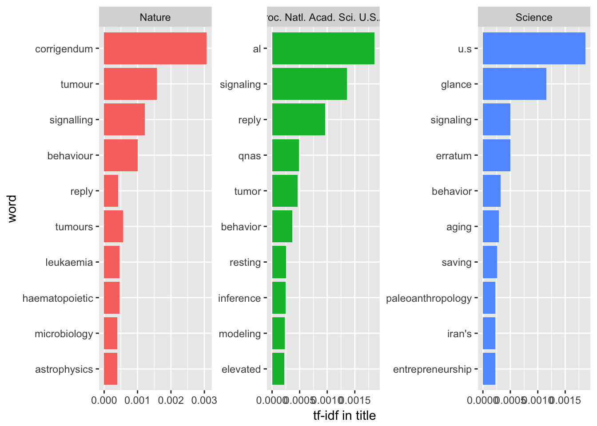
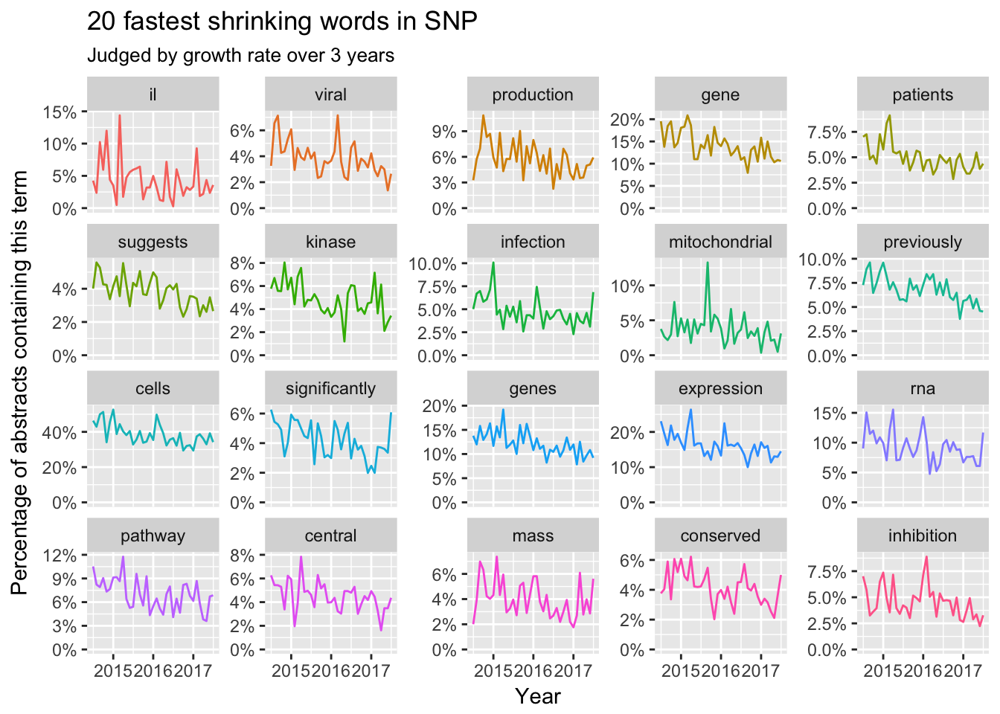

Text mining is often used to find spatiotemporal trends in news, government report and user generated contents in SNS websites. We could make sentiment analysis to find the real opinions of netizens. Also we could track the popularity of certain phases and find the connections among them. Such technique might also be useful for scientists or researchers to read papers.
Scientists or researchers’ daily life is immersed by a lot of literature. Most of the them are only focused on limited area in certain subjects. However, a modern scientist should always know what had happened in all of the other subjects. Some techniques used in other research might inspire your research. The only problem is that you need a lot time reading top general journals like Science, Nature and PNAS. Wait, we actually do not need to know the technique details and all we want to know is the patterns in those journals. Well, text mining would help.
The main advantage for text mining in academic journals is that academic papers always share same structures in one journals. Public academic databases such as PubMed or Google scholar could always show you the structured records for papers such as journal, authors, title, published dates and even abstracts. We could directly fetch those data and save in database. I developed scifetch package to get those data from PubMed. This package would support Google scholar, bing academic and baidu xueshu in the future. Actually I support PubMed in the first version because they have a user-friendly API and I could connect such pipe with xml2 package in a tidyverse way. Besides, easyPubMed package is also a good package to extract such data from PubMed.
# devtools::install_github('yufree/scifetch')
library(scifetch)Data collection
Here I collected the information from all the papers published in SNP i.e. science, nature and PNAS in the past three years as xml format and clean them into a dataframe for further text mining. The search grammar could be find from NCBI websites and a cheat sheet here.

query <- '(1095-9203[TA] OR 0028-0836[TA] OR 0027-8424[TA]) AND 2014/07:2017/06[DP]'
xml <- getpubmed(query, start = 1, end = 100)There are 26559 papers and I will use such data for text mining. PubMed has a limitation for 10000 records per query. So we need to fetch the data multiple times.
library(tidyverse)
library(lubridate)
xml2_1 <- getpubmed(query, start = 1, end = 10000)
xml2_2 <- getpubmed(query, start = 10001, end = 20000)
xml2_3 <- getpubmed(query, start = 20001, end = 26559)
tmdf1 <- getpubmedtbl(xml2_1)
tmdf2 <- getpubmedtbl(xml2_2)
tmdf3 <- getpubmedtbl(xml2_3)
tmdf <- bind_rows(tmdf1,tmdf2,tmdf3) %>%
mutate(time = as.POSIXct(date, origin = "1970-01-01"),
month = round_date(date, "month"))
tmdf## # A tibble: 26,559 x 7
## journal
## <chr>
## 1 Nature
## 2 Nature
## 3 Proc. Natl. Acad. Sci. U.S.A.
## 4 Proc. Natl. Acad. Sci. U.S.A.
## 5 Science
## 6 Science
## 7 Science
## 8 Science
## 9 Science
## 10 Science
## # ... with 26,549 more rows, and 6 more variables: title <chr>,
## # date <date>, abstract <chr>, line <int>, time <dttm>, month <date>Description statistics
Firstly, let’s see the papers by journal:
library(tidytext)
library(stringr)
tmdf %>%
group_by(journal) %>%
summarize(papers = n_distinct(title)) %>%
ggplot(aes(journal, papers)) +
geom_col() +
coord_flip()
Then we could check the high frequency terms in the title and abstract of these papers.
Title
wordft <- tmdf %>%
filter(nchar(title) > 0) %>%
unnest_tokens(word, title) %>%
anti_join(stop_words) %>%
filter(str_detect(word, "[^\\d]")) %>%
group_by(word) %>%
mutate(word_total = n()) %>%
ungroup()
words_by_journal <- wordft %>%
count(journal, word, sort = TRUE) %>%
ungroup()
tf_idf <- words_by_journal %>%
bind_tf_idf(word, journal, n) %>%
arrange(desc(tf_idf))
tf_idf %>%
group_by(journal) %>%
top_n(10, tf_idf) %>%
ungroup() %>%
mutate(word = reorder(word, tf_idf)) %>%
ggplot(aes(word, tf_idf, fill = journal)) +
geom_col(show.legend = FALSE) +
facet_wrap(~ journal, scales = "free") +
ylab("tf-idf in title") +
coord_flip()
As top journals, one of the most obvious features is that they all need correction and reply. With high influences, those journals would be the best place to discuss the leading edge techniques and findings. However, Science likes U.S., glance and paleoanthropology more while Nature and PNAS like tumor to be used in the titles.
Abstract
wordfabs <- tmdf %>%
filter(nchar(abstract) > 0) %>%
unnest_tokens(word, abstract) %>%
anti_join(stop_words) %>%
filter(str_detect(word, "[^\\d]")) %>%
group_by(word) %>%
mutate(word_total = n()) %>%
ungroup()
words_by_journal <- wordfabs %>%
count(journal, word, sort = TRUE) %>%
ungroup()
tf_idfabs <- words_by_journal %>%
bind_tf_idf(word, journal, n) %>%
arrange(desc(tf_idf))
tf_idfabs %>%
group_by(journal) %>%
top_n(10, tf_idf) %>%
ungroup() %>%
mutate(word = reorder(word, tf_idf)) %>%
ggplot(aes(word, tf_idf, fill = journal)) +
geom_col(show.legend = FALSE) +
facet_wrap(~ journal, scales = "free") +
ylab("tf-idf in abstract") +
coord_flip()
Well, when we focused on the abstracts, something interesting happens:
They all focused on tumor while Nature use ‘tumour’ as a journal from U.K.
Nature’s title and abstracts look similar while Science’s title always use different terms compared with their abstracts. Maybe Science’s authors like to be clickbaits.
PNAS’s authors use a lot of abbreviation in their abstracts.
Those top journals all like tumor, behavior and modeling and now you know how to pick up a topic to be published.
Temporal trends
Here we use logistic regression to examine whether the frequency of each word is increasing or decreasing over time. Every term will then have a growth rate associated with it.
Title
papers_per_month <- tmdf %>%
group_by(month) %>%
summarize(month_total = n())
word_month_counts <- wordft %>%
filter(word_total >= 100) %>%
count(word, month) %>%
complete(word, month, fill = list(n = 0)) %>%
inner_join(papers_per_month, by = "month") %>%
mutate(percent = n / month_total) %>%
mutate(year = year(month) + yday(month) / 365)
library(broom)
library(scales)
mod <- ~ glm(cbind(n, month_total - n) ~ year, ., family = "binomial")
slopes <- word_month_counts %>%
nest(-word) %>%
mutate(model = map(data, mod)) %>%
unnest(map(model, tidy)) %>%
filter(term == "year") %>%
arrange(desc(estimate))
slopes %>%
head(20) %>%
inner_join(word_month_counts, by = "word") %>%
mutate(word = reorder(word, -estimate)) %>%
ggplot(aes(month, n / month_total, color = word)) +
geom_line(show.legend = FALSE) +
scale_y_continuous(labels = percent_format()) +
facet_wrap(~ word, scales = "free_y") +
expand_limits(y = 0) +
labs(x = "Year",
y = "Percentage of titles containing this term",
title = "20 fastest growing words in SNP titles",
subtitle = "Judged by growth rate over 3 years")
slopes %>%
tail(20) %>%
inner_join(word_month_counts, by = "word") %>%
mutate(word = reorder(word, estimate)) %>%
ggplot(aes(month, n / month_total, color = word)) +
geom_line(show.legend = FALSE) +
scale_y_continuous(labels = percent_format()) +
facet_wrap(~ word, scales = "free_y") +
expand_limits(y = 0) +
labs(x = "Year",
y = "Percentage of titles containing this term",
title = "20 fastest shrinking words in SNP titles",
subtitle = "Judged by growth rate over 3 years")
Here we could find some trending terms like CRISPR, gut, and corrigendum are ‘promising’. However, some topics like Ebola, Hiv and cell differentiation would leave us. Another interesting trending is that the names of certain subjects is disappearing in those top journals like biology, chemistry, neuroscience, ecology and policy. Maybe most titles would like to focus on specific topics or certain problems.
Abstract
Now let’s review the temporal trends of terms in abstracts during the past three years by months.
word_month_counts2 <- wordfabs %>%
filter(word_total >= 1000) %>%
count(word, month) %>%
complete(word, month, fill = list(n = 0)) %>%
inner_join(papers_per_month, by = "month") %>%
mutate(percent = n / month_total) %>%
mutate(year = year(month) + yday(month) / 365)
slopes2 <- word_month_counts2 %>%
nest(-word) %>%
mutate(model = map(data, mod)) %>%
unnest(map(model, tidy)) %>%
filter(term == "year") %>%
arrange(desc(estimate))
slopes2 %>%
head(20) %>%
inner_join(word_month_counts2, by = "word") %>%
mutate(word = reorder(word, -estimate)) %>%
ggplot(aes(month, n / month_total, color = word)) +
geom_line(show.legend = FALSE) +
scale_y_continuous(labels = percent_format()) +
facet_wrap(~ word, scales = "free_y") +
expand_limits(y = 0) +
labs(x = "Year",
y = "Percentage of abstracts containing this term",
title = "20 fastest growing words in SNP",
subtitle = "Judged by growth rate over 3 years")
slopes2 %>%
tail(20) %>%
inner_join(word_month_counts2, by = "word") %>%
mutate(word = reorder(word, estimate)) %>%
ggplot(aes(month, n / month_total, color = word)) +
geom_line(show.legend = FALSE) +
scale_y_continuous(labels = percent_format()) +
facet_wrap(~ word, scales = "free_y") +
expand_limits(y = 0) +
labs(x = "Year",
y = "Percentage of abstracts containing this term",
title = "20 fastest shrinking words in SNP",
subtitle = "Judged by growth rate over 3 years")
It’s hard to find a clear pattern in growing words in abstracts. Maybe the abstracts focused more on technique details. However, shrinking words like viral, gene expression and pathway showed clear trends. Meanwhile, we could find some words like suggests, previously and production are discarded by the top scientist.
Relationship among words
N-gram analysis could be used to find a meaningful terms in those papers.
library(widyr)
library(igraph)
library(ggraph)
title_word_pairs <- wordft %>%
pairwise_count(word,line,sort = TRUE)
set.seed(42)
title_word_pairs %>%
filter(n >= 50) %>%
graph_from_data_frame() %>%
ggraph(layout = "fr") +
geom_edge_link(aes(edge_alpha = n, edge_width = n), edge_colour = "cyan4") +
geom_node_point(size = 1) +
geom_node_text(aes(label = name), repel = TRUE,
point.padding = unit(0.2, "lines")) +
labs(title = "Bigrams in title") +
theme_void()
abs_word_pairs <- wordfabs %>%
pairwise_count(word,line,sort = TRUE)
set.seed(42)
abs_word_pairs %>%
filter(n >= 1000) %>%
graph_from_data_frame() %>%
ggraph(layout = "fr") +
geom_edge_link(aes(edge_alpha = n, edge_width = n), edge_colour = "cyan4") +
geom_node_point(size = 1) +
geom_node_text(aes(label = name), repel = TRUE,
point.padding = unit(0.2, "lines")) +
labs(title = "Bigrams in abstract") +
theme_void()
Well, climate change, transcription factor, stem cell and cancer would always be the favorite bigrams in the titles of top journals. For the abstracts, cell related topics such as function, protein and expression are always preferred. Anyway, life science is always the center of trending sciences.
Topic modeling
Relationships among words could show us some trending. However, we could employ topic modeling to explore the topics as a bunch of words in the abstracts of those top journals.
desc_dtm <- wordfabs %>%
count(line, word, sort = TRUE) %>%
ungroup() %>%
cast_dtm(line, word, n)
library(topicmodels)
desc_lda <- LDA(desc_dtm, k = 20, control = list(seed = 42))
tidy_lda <- tidy(desc_lda)
top_terms <- tidy_lda %>%
group_by(topic) %>%
top_n(10, beta) %>%
ungroup() %>%
arrange(topic, -beta)
top_terms %>%
mutate(term = reorder(term, beta)) %>%
group_by(topic, term) %>%
arrange(desc(beta)) %>%
ungroup() %>%
mutate(term = factor(paste(term, topic, sep = "__"),
levels = rev(paste(term, topic, sep = "__")))) %>%
ggplot(aes(term, beta, fill = as.factor(topic))) +
geom_col(show.legend = FALSE) +
coord_flip() +
scale_x_discrete(labels = function(x) gsub("__.+$", "", x)) +
labs(title = "Top 10 terms in each LDA topic",
x = NULL, y = expression(beta)) +
facet_wrap(~ topic, ncol = 4, scales = "free") This topic model showed topics like climate change, virus infection, brain science and social science are other important research topics other than life science.
This topic model showed topics like climate change, virus infection, brain science and social science are other important research topics other than life science.
Sentiment analysis
Text mining could also be used to find the sentiment behind those journal papers or the customs using certain words.
contributions <- wordfabs %>%
inner_join(get_sentiments("afinn"), by = "word") %>%
group_by(word) %>%
summarize(occurences = n(),
contribution = sum(score))
contributions %>%
top_n(25, abs(contribution)) %>%
mutate(word = reorder(word, contribution)) %>%
ggplot(aes(word, contribution, fill = contribution > 0)) +
geom_col(show.legend = FALSE) +
coord_flip()
Well, I think the afinn word list for sentiment analysis is not suitable for scientific literature. Some words is actually neutral in academic journals. If someone could develop a specific word list for scientists, we might find something ignored by the writing lessons on campus.
Summary
Here, I demo some basic text mining results for top academic journals. Just like Google trends might predict the popularity of flu, text mining for academic journal might be a good tool to reveal unknown patterns or trends in certain subjects or top journals. Besides, we could also find unique usages of some words and some tones behind the journal. Besides, such methods might work better than impact factor or H index as the evaluation tools for certain researcher, journal or institute in a dynamic view. The most attractive thing is that every scientist could use this tools through open databases and find their own answers. This is the best benefits from information era.
You might read this excellent on-line book and David Robinson’s blog to make more findings.